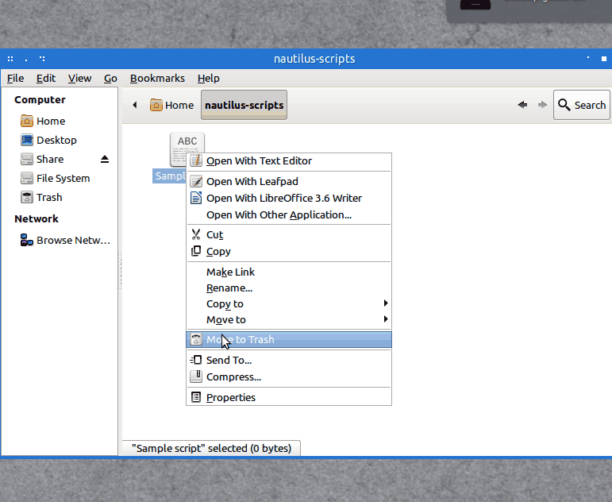

I found a nautilus script I would like to use. How do I install it?
|
Say you want to install the following script you found while browsing Ask Ubuntu: Dependencies The first thing you'll notice is that many scripts won't just run out of the box. Sometimes they depend on other packages you might or might not have installed. In this case our script depends on On other distros this might not be the case and you'll have to install the dependencies before using the script. If the dependency is part of the official repositories you can easily install it with Setting the script up Now that we've satisfied all dependencies we can move on and copy the script to our system. To do so we first create a new document in our scripts folder, which is Next we will create a new empty document by right clicking and selecting Create new Document → Empty Document. Name it anything you want, but beware: The title you choose is how the script entry will later appear in the nautilus context menu. So better choose a descriptive name for the document: Open the new document up in a text editor of your choice and proceed to copy and paste the contents of the code box above into it. Save it and exit the text editor. Making it executable At this point your script is set up correctly but still won't work as the system does not recognize it as an executable file yet. To make it executable, right click on your file and head to Properties → Permissions. Set the checkmark at Allow Executing as program and close the dialogue:  Usage You should now be able to access the script from your nautilus context menu. Just right click on a file of your choice and head to Scripts --> Script name (here: Sample Script). Click on the entry to execute the script on the files you selected:
Assigning a keyboard shortcut to the script Keyboard shortcuts for Nautilus scripts can be assigned by editing Nautilus' keyboard accelerator file. On Ubuntu 12.04 and below this file can be found under The syntax of the accelerator file might look a bit overwhelming at first but it's actually pretty easy. Take a look at this excerpt, for instance: Every line represents a single key assignment. The first double-quoted segment designates the action, the second one the assigned key combination. Lines starting with a semicolon are commented and currently inactive. In order to assign a shortcut to your script you will have to search this file for the name of the script and uncomment the corresponding line by removing the semicolon. Then proceed to type in the keyboard shortcut you would like to assign. These are the available modifiers and their corresponding keycodes:
You can find valid keycodes for all other keys by using xev. Here's how you would have to modify the section above to assign your sample script to ALT + SHIFT + S: On Ubuntu 12.04 (and perhaps later releases as well) Nautilus will sometimes overwrite the accelerator file before you can make any changes. So it might be a good idea to perform all of the changes you make while Nautilus isn't running ( Automating the installation This Nautilus script will automatically install Nautilus scripts for you. Please take a look at the comments to see what's going on behind the scenes: As an aside: Here's the nautilus script I used to record the screencasts of this answer. |
|||||||||||||||||||||
|